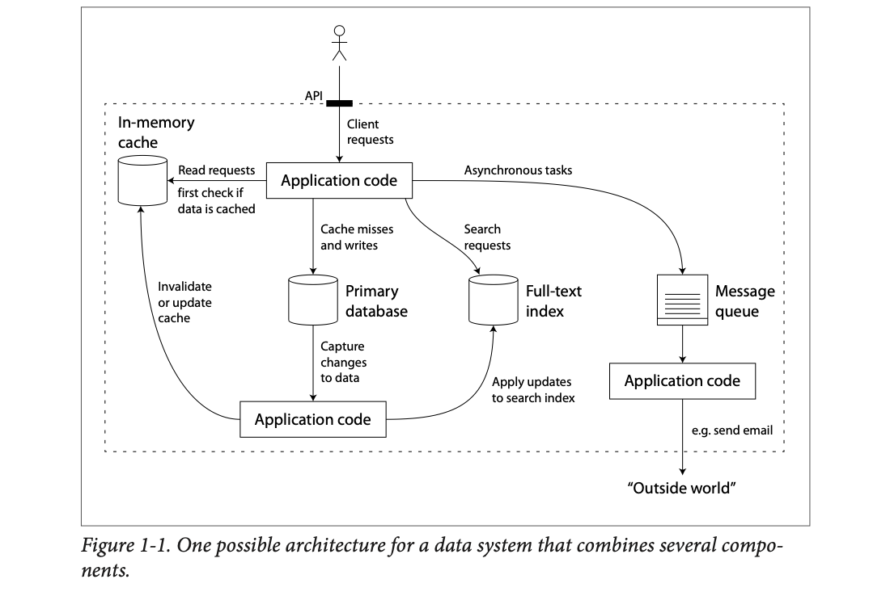
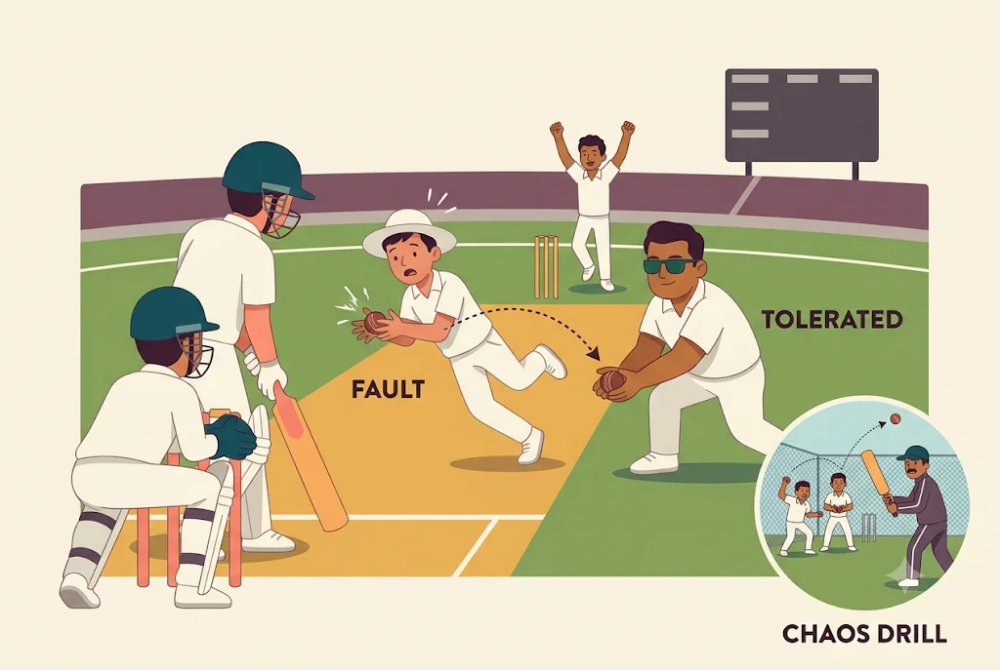
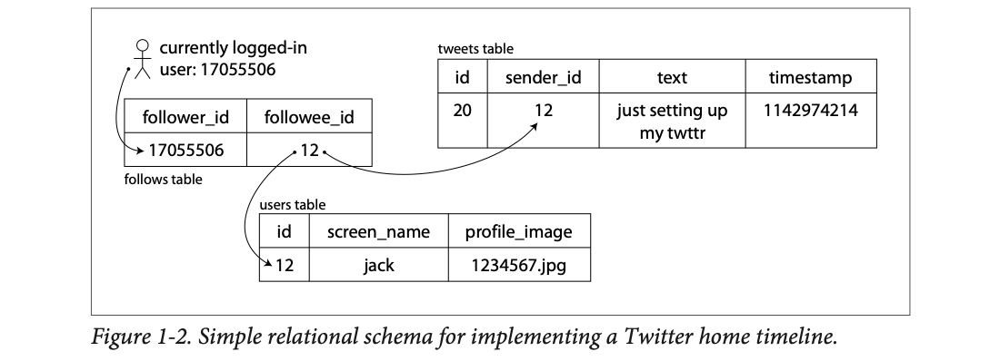
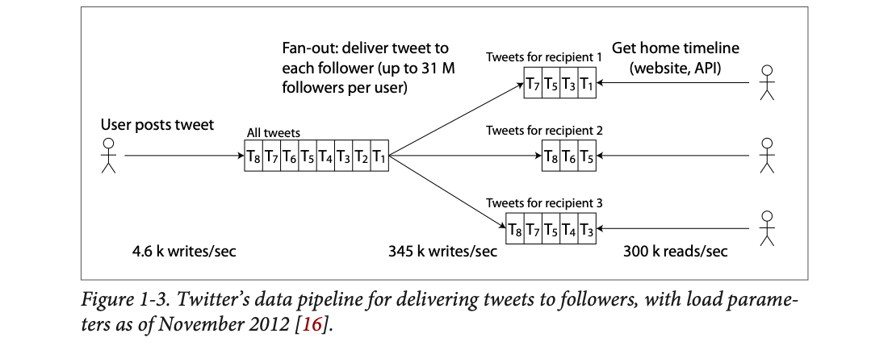
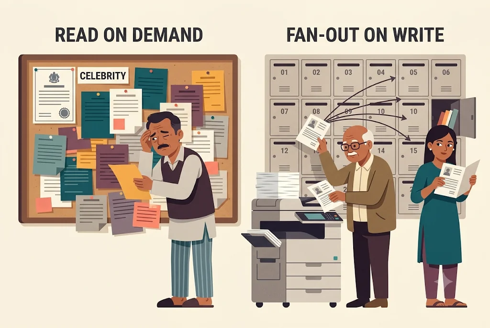
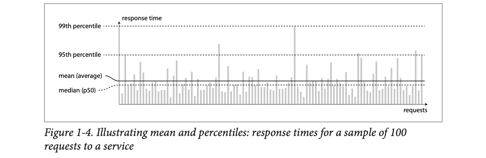
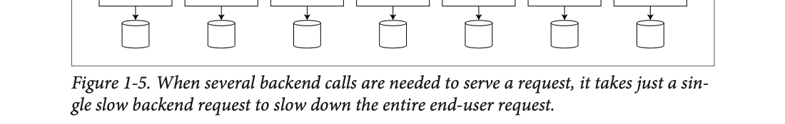
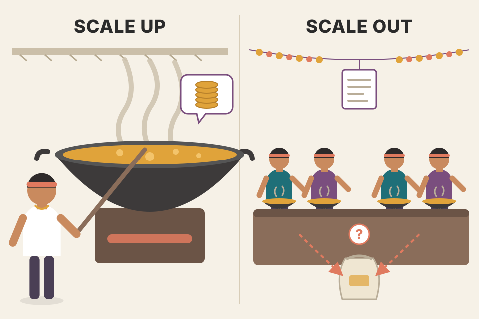
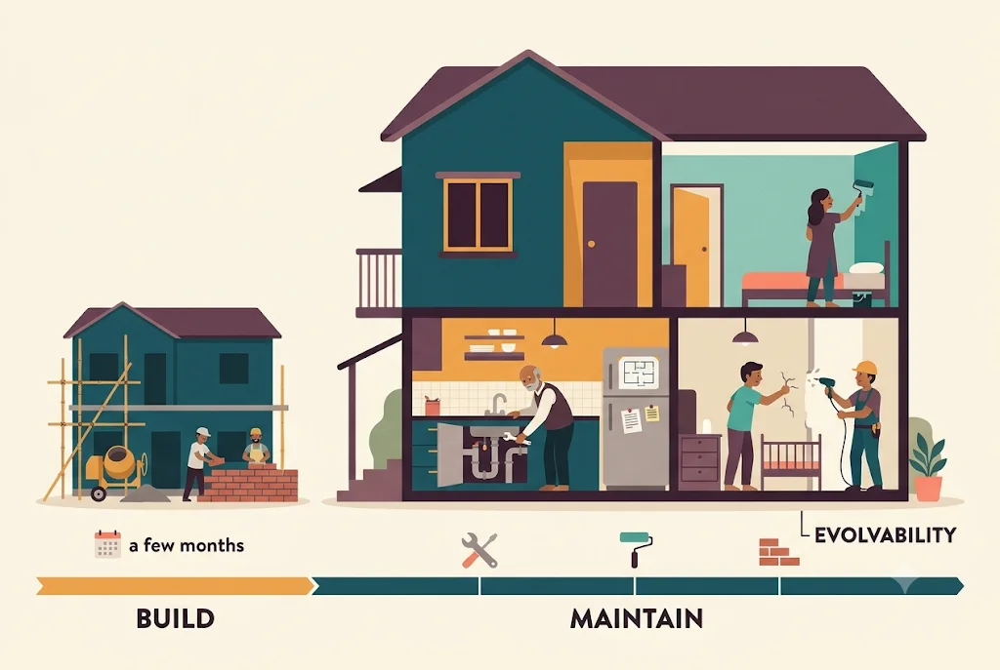

Most apps today are limited by data, not by CPU (the processor): how much data, how messy it is, and how fast it changes. We build them by stitching together standard parts (databases, caches, search indexes, queues, batch jobs), and the moment we do that we become data-system designers. Kleppmann says three things matter most. The system should keep working when things break (reliability). It should have a sensible way to grow when load grows (scalability). And people should be able to run it, understand it and change it for years (maintainability). He makes each word precise: faults vs failures; load parameters like Twitter's fan-out; response-time percentiles instead of averages; scale up vs scale out; and operability, simplicity and evolvability. This page walks the whole chapter in the book's order, with every figure, simple analogies and small simulators. Numbers tagged modelled are invented for the demos, not from the book.
The chapter is a vocabulary lesson with one argument running through it: "reliable", "scalable" and "maintainable" are words people throw around loosely; here is what each one actually means, and how you would measure or reason about it. Read the chain top to bottom.
The book has three parts. Part I is the first four chapters. They cover the basic ideas that apply to every data system, whether it runs on one machine or is spread across a cluster (a group of machines working together).
After that, Part II turns to the special problems of distributed data systems (data spread over many machines).
Take one thing, a user's profile in an app (name, photo, city). Each part of the book asks a different question about it.
Learning to cook. Part I is knowing your ingredients and your kitchen: what "done" means (Ch.1), the kinds of dishes (Ch.2), how the fridge and pantry are organised (Ch.3), and how you pack food in tiffins so it survives the trip (Ch.4). Part II is running a restaurant chain with many kitchens that must serve the same menu. Part III is the central kitchen that preps sauces for all the branches. Where it breaks: food doesn't need to stay "consistent" across branches to the millisecond; data often does.
The chapter opens with Alan Kay (Dr Dobb's Journal, 2012): people think of the Internet as a natural resource, like the Pacific Ocean, rather than something humans built; when did anything made at that scale last work so well?
The point of the quote: very large systems can be made to work almost without errors. That is the bar this chapter is about.
Many applications today are data-intensive, as opposed to compute-intensive. Raw CPU power is rarely what limits them. The bigger problems are usually:
A data-intensive app is usually built from standard building blocks that give commonly needed functions. Many apps need to:
| Need | Building block | Everyday example (mine) |
|---|---|---|
| Store data so that they, or another app, can find it again later | Databases | Your orders table in PostgreSQL |
| Remember the result of an expensive operation, to speed up reads | Caches | Redis holding a user's computed feed |
| Let users search data by keyword or filter it in many ways | Search indexes | Elasticsearch behind a product search box |
| Send a message to another process, to be handled asynchronously (later, not while the user waits) | Stream processing | "Order placed" event → email service |
| Every so often, crunch a large amount of collected data | Batch processing | Nightly job that builds sales reports |
If this sounds painfully obvious, Kleppmann says, that is only because these data systems are such a successful abstraction: we use them all the time without thinking. Most engineers would never dream of writing a new storage engine from scratch, because databases already do that job well.
But reality is not that simple. There are many databases with different characteristics, because apps have different needs. There are many ways to cache, several ways to build search indexes, and so on. So we still have to work out which tools and approaches fit the task. And sometimes it is hard to combine several tools when you need something no single tool can do.
The book is a journey through both the principles and the practicalities of data systems: what tools have in common, what makes them different, and how they get their characteristics. Chapter 1 starts with the basics of what we are trying to achieve (reliable, scalable, maintainable data systems), and later chapters go layer by layer through the design decisions.
A compute-intensive job is a chess grandmaster thinking hard about one board. A data-intensive job is a railway reservation office: each booking is easy arithmetic, but there are crores of passengers, many trains, waitlists that change every second, and the office must never lose a booking. Where it breaks: real apps are often a mix; some parts (ML, machine learning, training, image resizing) really are CPU-bound.
The building blocks are "solved problems" packaged as products. You don't rewrite them; you choose and combine them. So the real engineering skill shifts from "how do I store bytes" to "which store, with which guarantees, glued together how". That choice is what the rest of the book trains.
We usually think of databases, queues and caches as very different kinds of tools. A database and a message queue do look a bit alike (both store data for some time), but they have very different access patterns (how data is read and written). That means different performance, and so very different implementations.
So why put them all under one umbrella word, data systems? Two reasons:
For example, say you run your own caching layer (memcached or similar), or a full-text search server next to your main database (Elasticsearch or Solr). Then it is usually your application code's job to keep those caches and indexes in sync with the main database. Figure 1-1 shows what this may look like (later chapters go into detail).

The dotted box is your data system; the stick figure outside is a client who only sees the API (application programming interface: the door clients call) at the top. Follow the arrows from the top "Application code" box:
When you combine tools to provide a service, the service's interface or API usually hides those details from clients. You have built a new, special-purpose data system out of smaller, general-purpose parts. Your composite system may promise certain guarantees, for example that the cache is correctly invalidated or updated on writes, so outside clients see consistent results. You are now not only an application developer, but also a data system designer.
Designing a data system or service raises tricky questions:
Many factors can shape the design: the skills and experience of the people involved, dependencies on legacy (old) systems, the delivery timescale, how much risk your organisation tolerates, regulatory rules, and so on. These depend heavily on the situation.
A wedding caterer. The client (the family) only talks to the head caterer (the API). Behind the curtain: the store room (primary database), a counter of ready sweets near the entrance (cache), a printed menu with an index of dishes (search index), and a "to-do slip" box for jobs done later, like sending thank-you notes (message queue). When the store room runs out of gulab jamun, someone must run to the counter and take the old sweets off display (cache invalidation), and someone must strike it off the menu (index update). If nobody does, guests see a sweet that doesn't exist. Where it breaks: in software these updates happen thousands of times a second and can arrive out of order, which a human caterer never faces.
Each tool is good at one access pattern: the cache at "give me this key fast", the index at "find documents with these words", the queue at "hold this until someone handles it", the database at "store this safely and let me query it". Stitching them gives you all patterns, but now the same fact lives in several places. The glue code has to keep the copies in step; if it fails, clients see inconsistent answers. That is why Kleppmann says you are now a data-system designer: the guarantees of the whole are your responsibility.
A user updates their display name from "dhanesh" to "Dhanesh R". (1) App code writes the new name to Postgres. (2) Change capture sees the row change. (3) It deletes the cached profile in Redis, so the next read misses and refetches. (4) It updates the search index so searching "Dhanesh R" finds the user. If step 3 is skipped, the profile page shows the old name until the cache entry expires; if step 4 is skipped, search shows the old name forever. Both are correctness bugs in a system made only of "correct" tools.
The book focuses on three concerns that matter in most software systems:
The system should keep working correctly (doing the right thing at the desired performance) even when things go wrong: hardware faults, software faults, and even human error.
As the system grows (in data volume, traffic volume or complexity), there should be reasonable ways to deal with that growth.
Over time, many different people will work on the system (engineering and operations; keeping current behaviour and adapting it to new uses). They should all be able to work on it productively.
These words are often used without a clear meaning. The rest of the chapter explores ways of thinking about each one. Later chapters cover the techniques, architectures and algorithms used to achieve them.
Take a food-delivery app on Diwali night (a modelled scenario, not from the book). Ask each of the three questions about it:
Same app, three different worries. A system can pass one test and fail another: it may never crash (reliable) yet need a full rewrite to add groceries (not maintainable).
Click R (reliability), S (scalability) or M (maintainability) for each line.
1. A disk on the orders database dies. Checkout shows errors for 20 minutes.
2. Sign-ups grow from 10,000 to 100,000 users and the home page goes from 200 ms to 3 s.
3. Adding a 'tip the rider' field takes 3 weeks, because nobody understands the order code.
4. A deploy with a bug sends every cart to the wrong address.
5. The nightly report took 1 hour. Data grew 9×, and now it takes 9 hours.
6. Only one engineer knows how to restart the payment service, and she is on leave.
A Mumbai local train service. Reliable: trains keep running even when a signal fails or a coach breaks down. Scalable: when the city doubles, there is a plan (12-coach rakes, more frequent trains, new lines). Maintainable: new staff can learn the timetable system, the signalling can be upgraded without shutting the network, and engineers years later can still change it. Where it breaks: a train line can't be copied in seconds; software can, which makes some software fixes (like adding servers) much cheaper.
Each one answers a different "what happens when…": …something breaks? (reliability), …more people show up? (scalability), …time passes and people and requirements change? (maintainability). Plenty of other factors exist (security, compliance, cost), and the summary calls them all non-functional requirements; these three get the most attention in the book.
Everyone has a gut feeling for what "reliable" software means. Typical expectations:
If all of that together means "working correctly", then reliability roughly means "continuing to work correctly, even when things go wrong."
The things that can go wrong are called faults. Systems that expect faults and can cope with them are called fault-tolerant or resilient. The name is a little misleading: it suggests we could tolerate every possible fault, which is not realistic. If the whole planet (and every server on it) were swallowed by a black hole, tolerating that would need web hosting in space; good luck getting that budget approved. So it only makes sense to talk about tolerating certain types of fault.
A fault is not the same as a failure [2]:
You can never push the chance of a fault to zero. So it's usually best to build fault-tolerance mechanisms that stop faults from turning into failures. The book covers many techniques for building reliable systems from unreliable parts.
It sounds backwards, but in a fault-tolerant system it can make sense to raise the rate of faults by triggering them on purpose, for example by randomly killing processes without warning. Many critical bugs are really due to poor error handling [3]. By causing faults deliberately, you keep the fault-tolerance machinery constantly exercised and tested, which raises your confidence that real faults will be handled correctly. The Netflix Chaos Monkey [4] is an example of this approach.
We usually prefer tolerating faults over preventing them, but sometimes prevention is better because no cure exists. Security is the example: if an attacker has broken in and read sensitive data, that cannot be undone. This book mostly deals with faults that can be cured, described in the next sections.
A shop's order data is kept on 3 servers (3 copies). Server A's disk dies. That is a fault (one part broke). Servers B and C still answer, so customers notice nothing: no failure. Now a second story: all 3 servers sit in the same rack, and that rack loses power. Three faults at once, no copy left to answer, the shop is down: that is a failure.
Lesson: fault tolerance works only for the kinds of fault you planned for. Story 2 is a preview of correlated (systematic) faults.

A cricket team. A fault is one fielder dropping a catch. A failure is losing the match. Good teams expect drops and build tolerance: a second slip, bowlers who can bowl extra overs, a deep batting order. And they run fielding drills where the coach hits catches at them on purpose (chaos monkey) so dropping one in a real match doesn't panic anyone. Where it breaks: in cricket you can't "retry" a dropped catch; in software many faults can be retried or repaired, so tolerance is far more powerful.
Fault tolerance is a wall between a component and the user: redundancy (another copy takes over), retries, timeouts, crash-and-restart. The wall only works if the code that runs on the "bad day" path is correct, and that path is rarely run in normal life. Chaos testing makes the bad day happen every day, so the bugs in that path show up while engineers are awake and watching.
When we think of why systems fail, hardware faults come to mind first: hard disks crash, RAM (the machine's working memory) becomes faulty, the power grid blacks out, someone unplugs the wrong network cable. Anyone who has worked in a large data centre will tell you these things happen all the time when you have many machines.
Hard disks are reported to have a mean time to failure (MTTF) of about 10 to 50 years [5, 6]. So on a storage cluster with 10,000 disks, you should expect, on average, one disk to die per day.
The grid shows 400 disks. Press "Simulate a year" to see roughly how many of them die in 365 days at this MTTF (red), each replaced by a spare (green). Random draw, modelled.
The usual first answer is to add redundancy to individual hardware parts so the system fails less often:
When one part dies, the spare takes its place while the broken one is replaced. This can't fully stop hardware problems from causing failures, but it is well understood and can often keep a machine running without interruption for years.
Until recently, redundant hardware was enough for most apps, because it makes total failure of a single machine fairly rare. As long as you can restore a backup onto a new machine quite quickly, the downtime isn't catastrophic for most apps. So multi-machine redundancy was only needed by a few apps where high availability was absolutely essential.
But data volumes and computing needs keep rising, so more apps use many machines, which raises the rate of hardware faults in proportion. Also, on some cloud platforms such as Amazon Web Services (AWS), it is fairly common for virtual machine instances to become unavailable without warning [7], because the platform is designed to favour flexibility and elasticity over single-machine reliability. (A footnote here points ahead: "elastic" is defined in Approaches for coping with load.)
So there is a move towards systems that can tolerate losing entire machines, using software fault-tolerance instead of (or in addition to) hardware redundancy. These systems also have an operational advantage. A single-server system needs planned downtime to reboot, for example to apply OS (operating system) security patches. A system that tolerates machine failure can instead be patched one node at a time, without the whole system going down. (The common name for this is a "rolling upgrade"; the book doesn't use the term.)
A housing society with one water pump vs two. With one pump (and a spare motor in the store room) you are fine most of the time, but servicing it means no water for a morning. With two pumps you can service one while the other runs, and nobody notices. Now imagine 10,000 pumps: some pump breaks every day, so "a person fixes it when it breaks" turns into "the system must route around broken pumps on its own". Where it breaks: pumps don't vanish without warning the way cloud VMs can.
MTTF is an average over a big population, so failures scale linearly with how many parts you own. One laptop disk with a 30-year MTTF will probably outlive the laptop; 10,000 such disks lose about one a day. Hardware redundancy protects inside one machine; at large scale, and on clouds that treat VMs as disposable, the unit of failure becomes the whole machine, so the protection has to move up into software (replicas on other machines).
We usually think of hardware faults as random and independent: one machine's disk failing does not mean another's will. There may be weak correlations (for example a common cause like the temperature in a server rack), but otherwise it's unlikely that many hardware parts fail at the same moment.
Another class of fault is a systematic error inside the system [8]. These are harder to predict, and because they are correlated across nodes, they cause many more system failures than uncorrelated hardware faults [5]. Examples:
The bugs behind these faults often sit dormant for a long time until an unusual set of circumstances triggers them. Then it turns out the software was making some assumption about its environment, and while that assumption is usually true, one day it stops being true [11].
There is no quick fix for systematic software faults. Lots of small things help:
Some systems promise a rule, for example a message queue promises number of incoming messages = number of outgoing messages. Such a system can constantly check itself while running, and raise an alert if the numbers don't match [12].
Twelve chai stalls on a street. A hardware fault is one stall's stove running out of gas: annoying, but the other eleven keep serving. A systematic fault is all twelve buying milk from the same dairy, and that dairy's milk is spoiled today: every stall fails at once, for the same reason. A cascade is one stall closing, its customers crowding the next stall, which runs out of cups and closes too, and so on down the street. Where it breaks: in software the "same dairy" is often invisible: a shared library, a clock event like a leap second, or one shared config file.
Redundancy works only when copies fail independently. Two replicas each with a 1% chance of failing go down together with probability about 0.01% if independent, but 1% if they share the bug, because the second copy runs the same code and hits the same input. Software faults defeat redundancy because all copies are clones. The defences are therefore different: diversity, isolation, restarting, and self-checks that notice "something impossible just happened".
A queue reports every minute: messages received 10,000, delivered 9,998, still waiting 0. 10,000 ≠ 9,998 + 0, so 2 messages vanished. An alert fires right away, instead of a customer noticing days later that their order email never arrived. The check doesn't fix the bug; it shortens the time a dormant bug stays hidden.
Humans design and build software, and the operators who keep it running are human too. Even with the best intentions, humans are known to be unreliable. One study of large internet services found that configuration errors by operators were the leading cause of outages, while hardware faults (servers or network) played a role in only 10–25% of outages [13].
How do we make a system reliable in spite of unreliable humans? The best systems combine several approaches:
Assumes the bug is caught by monitoring during the first step and rolled back. 100% means "push to everyone at once".
An engineer changes a timeout from 3000 (ms) to 3 by mistake (a modelled story). Follow it left to right; each defence is one of the book's approaches:
Without these defences, the typo goes to 100% of users and nobody knows until customers complain. With them, the worst case is a few minutes of errors for about 5% of users. (Defence 6, training, is why the engineer knew to use the admin UI in the first place.)
A UPI (India's Unified Payments Interface) app releasing a new payments screen. Approach 1 (design): the "Pay" button asks for PIN and shows the name of the receiver, so a typo in the number is hard to miss. Approach 2 (sandbox): developers test with fake money. Approach 4 (gradual rollout): the new screen goes to 1% of users first. Approach 5 (telemetry): a dashboard shows failed payments per minute; if it jumps, the rollout stops. Where it breaks: some human mistakes (sending money to the wrong account) can't be rolled back by the app; that's the "prevention, not cure" case from plate 05.
You can't make people stop making mistakes, so the six approaches attack the path from mistake to failure: make the mistake harder to make (1), make it happen where it can't hurt (2, 3), make it small and short when it does hurt (4), and make it visible fast (5). The gradual rollout slider above shows the core arithmetic: damage ≈ share of users exposed × time before you notice.
Reliability isn't only for nuclear power stations and air traffic control. Ordinary apps are also expected to work reliably:
Even "non-critical" apps carry a responsibility to users. Picture a parent who stores all the photos and videos of their children in your photo app [15]. How would they feel if that database were suddenly corrupted? Would they know how to restore it from a backup?
There are situations where we might choose to give up some reliability to cut development cost (e.g. a prototype for an unproven market) or operational cost (e.g. a service with a very narrow profit margin). But we should be very conscious of when we are cutting corners.
A modelled story that plays out the book's photo-app question [15]. Same app, same bug, two choices about reliability. Click through it.
"Conscious corner-cutting" in practice: write down what you skipped, and when you would stop skipping it.
| Thing you could skip | Hackathon prototype | Photo app with real families |
|---|---|---|
| Backups | skip; the data is fake | nightly, kept in another region |
| Testing a restore | skip | once a month (a backup you never restored is a hope, not a backup) |
| A second server | skip; one laptop is fine | yes, so one dead machine is a fault, not a failure |
| Alerts | skip | yes, someone is woken up |
| Written down? | "no backups, demo only" in the README | runbook: how to restore |
A wedding photographer who keeps the only copy of your wedding photos on one memory card. The photographer's "business" isn't life-or-death, but losing that card is a disaster you can't undo. A hackathon demo, on the other hand, can live on one laptop; just know you made that trade. Where it breaks: in software you often don't know which data will turn out to be precious, so "conscious corner-cutting" means writing down what you skipped.
Reliability has a price (extra machines, extra engineering, slower releases). The chapter's advice isn't "always maximise it"; it is "make the trade-off on purpose, knowing who gets hurt when it fails".
A system that works reliably today won't necessarily work reliably tomorrow. A common reason it degrades is increased load: maybe it grew from 10,000 concurrent users to 100,000, or from 1 million to 10 million. Maybe it's processing much bigger volumes of data than before.
Scalability is the word for a system's ability to cope with increased load. But it is not a one-dimensional label you can stick on a system. Saying "X is scalable" or "Y doesn't scale" means nothing. Talking about scalability means asking:
Pick a kind of growth. The part of a simple web app that feels it first lights up red.
Asking "is this restaurant scalable?" is meaningless. Scalable to what? Twice the dine-in guests? A wedding order for 2,000 plates? Ten times the Swiggy orders at 9 pm? Each kind of growth hits a different bottleneck (tables, cooking pots, delivery packing counter) and has a different fix. Where it breaks: a restaurant can't add a kitchen in five minutes; some software can.
Before you can ask "what happens if our load doubles?", you need to describe the current load in a short, precise way. Load is described with a few numbers called load parameters. The best choice depends on your architecture. It could be:
Maybe the average case matters to you; or maybe your bottleneck is dominated by a small number of extreme cases.
Two of Twitter's main operations:
| Operation | What it does | Load |
|---|---|---|
| Post tweet | A user publishes a new message to their followers | 4.6 k req/s average > 12 k req/s peak |
| Home timeline | A user views recent tweets from the people they follow | 300 k req/s |
Handling 12,000 writes per second (the peak tweet rate) would be fairly easy. Twitter's scaling challenge is not mainly tweet volume but fan-out: each user follows many people, and each user is followed by many people.
Footnote: fan-out is borrowed from electronic engineering, where it means the number of logic-gate inputs attached to another gate's output; the output must supply enough current to drive all of them. In transaction-processing systems we use it for the number of requests to other services you must make to serve one incoming request.
There are broadly two ways to implement these two operations:
Approach 1 — compute at read time. Posting a tweet just inserts it into a global collection of tweets. When a user asks for their home timeline, look up everyone they follow, find all recent tweets by each of them, and merge them sorted by time. In a relational database like the one in Figure 1-2, this would be an SQL (Structured Query Language) query like:
SELECT tweets.*, users.* FROM tweets JOIN users ON tweets.sender_id = users.id JOIN follows ON follows.followee_id = users.id WHERE follows.follower_id = current_user

Start at the stick figure: the logged-in user has id 17055506. The arrow goes to the follows table, where a row says follower 17055506 follows followee 12. From 12, one arrow goes to the users table (id 12 is jack, with a profile image) and another to the tweets table, where tweet 20 by sender 12 says "just setting up my twttr". The SQL above is exactly these arrows written as JOINs: follows → users → tweets. Do this for every person you follow, on every timeline load, and you see the cost.
Approach 2 — compute at write time. Keep a cache for each user's home timeline, like a mailbox of tweets for each recipient (Figure 1-3). When a user posts a tweet, look up everyone who follows them, and insert the new tweet into each of their home-timeline caches. Reading the home timeline is then cheap, because the result was computed ahead of time.

Left to right. A user posts a tweet (4.6 k writes/sec) into the global "All tweets" list (T1…T8). Then fan-out: each tweet is copied into the timeline cache of every follower ("Tweets for recipient 1/2/3"), which adds up to 345 k writes/sec. A single user can have up to 31 M followers. On the right, readers fetch their own pre-built list (300 k reads/sec). Notice each recipient's list holds a different mix (recipient 2 only follows the authors of T8, T6, T5). The work has moved from the right side (reads) to the middle (fan-out writes).
The first version of Twitter used approach 1, but the systems struggled to keep up with the load of home-timeline queries, so the company switched to approach 2. This works better because the rate of published tweets is almost two orders of magnitude lower (about 100×) than the rate of home-timeline reads. So here it's better to do more work at write time and less at read time.
The downside of approach 2: posting a tweet now needs a lot of extra work. On average a tweet goes to about 75 followers, so 4.6 k tweets/sec become 345 k writes/sec to timeline caches. But that average hides that followers per user vary wildly; some users have over 30 million followers. So one tweet can cause over 30 million writes to home timelines! Doing that in time is a big challenge: Twitter tries to deliver tweets to followers within 5 seconds.
In the Twitter example, the distribution of followers per user (maybe weighted by how often those users tweet) is a key load parameter for scalability, because it decides the fan-out load. Your app may look very different, but you can reason about its load the same way.
The final twist. Now that approach 2 is robustly implemented, Twitter is moving to a hybrid. Most users' tweets are still fanned out to timelines when posted, but a small number of users with a very large number of followers (celebrities) are excepted from fan-out. When a user reads their home timeline, tweets from celebrities they follow are fetched separately and merged in at read time, like approach 1. This hybrid gives consistently good performance.
Defaults are the book's November 2012 numbers. The celebrity slider is modelled.
| Approach 1 (read-time) | Approach 2 (fan-out) | |
|---|---|---|
| Writes/sec | ||
| Work per timeline read | ||
| One celebrity tweet costs | 1 insert | |
| Total work/sec modelled |

A housing society's notice board vs letterboxes. Approach 1: every notice goes on one big board in the lobby; each resident who wants news walks down and reads through all of it to find what's from people they care about. Cheap to post, expensive to read. Approach 2: the secretary photocopies every notice and drops a copy into each interested resident's letterbox. Reading is instant, but a notice for 500 flats means 500 photocopies. Hybrid: normal residents' notices get photocopied, but the municipal corporation's notices (sent to every flat in the city, the "celebrity") stay on the lobby board, and you glance at that board along with your letterbox. Where it breaks: letterboxes in a computer cost memory, not paper, and the 5-second delivery target has no real-world equivalent.
Total work is roughly fixed; the choice is when you pay it. Approach 1 pays at read time (joins over everyone you follow, 300 k times per second). Approach 2 pays at write time (one cache insert per follower, 345 k per second on average). Because reads outnumber writes about 65 to 1 (300 k ÷ 4.6 k), paying at write time is cheaper in total. But write-time cost is driven by the followers distribution, not the average: a 30 M-follower account turns one write into 30 M. The hybrid caps the worst case by treating that long tail differently.
4.6 k tweets/sec × 75 followers = 345 k cache inserts/sec (matches Fig 1-3). One celebrity tweet with 30 M followers within the 5 s target needs 30,000,000 ÷ 5 = 6 M inserts/sec just for that one tweet, about 17× the whole site's average fan-out rate. That is why celebrities are excepted in the hybrid.
Once you have described the load, you can ask what happens when it increases. There are two ways to look at it:
Both questions need performance numbers, so let's look at describing performance.
Footnote: in an ideal world, a batch job's running time = dataset size ÷ throughput. In practice it's often longer, because of skew (data not spread evenly across worker processes) or waiting for the slowest task to finish.
A modelled job must process 1,000 GB on 4 workers, each doing 100 MB/s (400 MB/s together). Ideal time = 1,000,000 MB ÷ 400 MB/s = 2,500 s ≈ 42 min. But the data was split unevenly (skew): one worker got 400 GB, the others 200 GB each. The job ends only when the slowest task ends: 400,000 MB ÷ 100 MB/s = 4,000 s ≈ 67 min.
Drag to 25%: an even split, real = ideal. Drag right: one straggler, and the whole job waits for it.
At the 40% setting: throughput on paper was 400 MB/s, but the job behaved like it ran at 1,000 GB ÷ 67 min ≈ 250 MB/s. Same total work, 60% longer, only because of uneven splitting.
A dhobi (laundry) service vs a tea stall. The dhobi cares about throughput: how many kilos of clothes washed per day; nobody waits at the counter. The tea stall cares about response time: how long the customer standing there waits for their cup. Where it breaks: online systems care about throughput too (how many customers per hour); it's just that a single slow cup is noticed by a real person.
People often use latency and response time as if they meant the same thing. They don't:
Even if you send the same request over and over, the response time will be slightly different each time. In a real system handling a variety of requests, it can vary a lot. So think of response time not as a single number, but as a distribution of values you can measure.
In Figure 1-4 (next plate), each grey bar is one request, and its height shows how long it took. Most requests are reasonably fast, but there are occasional outliers that take much longer. Maybe the slow ones are inherently more expensive (they process more data). But even when you'd expect every request to take the same time, you get variation. Random extra latency can come from:
| Cause (from the book) | In plain words |
|---|---|
| a context switch to a background process | the CPU pauses your request to run something else for a moment |
| loss of a network packet and TCP retransmission | a piece of data got lost on the wire and has to be sent again (often after a timeout) |
| a garbage collection pause | the runtime (the Java virtual machine (JVM), Go, etc.) stops your code briefly to clean up memory |
| a page fault forcing a read from disk | the data you need was swapped out of RAM and must be read back from disk |
| mechanical vibrations in the server rack [18] | a slightly unbalanced rack shook the disks and slowed them (a real case of 500 ms disk latency) |
| "many other things" |
One request = network there + waiting in the queue + service time + network back. Each send rolls small random delays, and sometimes one of the book's causes hits.
Ordering at a busy dosa counter. Response time is from the moment you say "one masala dosa" to the moment it's in your hand. Latency is the part where your token sits in the pile waiting for the cook to get to it. Service time is the two minutes the cook actually spends making it. Order the same dosa ten times and you'll get ten different waits: sometimes the cook stepped away (context switch), sometimes a dosa tore and was remade (retransmission), sometimes the tawa had to be cleaned (GC pause). Where it breaks: a dosa counter has one queue you can see; in software, queues hide in the kernel, the network, the thread pool and the disk.
When people say "the API's latency is 50 ms" they usually mean response time measured somewhere. The distinction matters because you can make service time faster and still have bad response time if requests queue. And because many small random delays add up differently each time, a single average number hides the shape; you need the full distribution.

Each of the 100 grey bars is one request in the order it arrived; height = response time. The lowest dashed line is the median (p50): half the bars are below it. Just above it is the solid mean: it sits higher than the median because a few very tall bars pull the average up. Higher up, the 95th percentile line has only 5 bars poking above it, and the 99th percentile line has just 1 (the tallest spike in the middle). The picture's lesson: the mean is a line that no particular request "has", while percentiles tell you how many users waited longer than a given time.
It's common to report a service's average response time. (Strictly, "average" isn't one specific formula, but in practice it means the arithmetic mean: add up n values and divide by n.) But the mean is not a good metric for your "typical" response time, because it doesn't tell you how many users actually experienced that delay.
It's usually better to use percentiles. Sort your list of response times from fastest to slowest. The median is the halfway point. Example: if the median is 200 ms, half your requests return in less than 200 ms and half take longer.
Beyond the book: high percentiles are commonly called tail latencies, because they live in the long right-hand "tail" of the distribution. This edition's text doesn't use the term, but you'll meet it everywhere.
High percentiles directly affect users' experience. Amazon describes response-time requirements for internal services at the 99.9th percentile, even though that affects only 1 in 1,000 requests. Why? The customers with the slowest requests are often those who have made many purchases, i.e. the most valuable customers [19]. Keeping them happy matters. Amazon has also seen that a 100 ms increase in response time reduces sales by 1% [20], and others report that a 1-second slowdown cuts a customer-satisfaction metric by 16% [21, 22].
On the other hand, optimising the 99.99th percentile (the slowest 1 in 10,000) was judged too expensive and not worth enough for Amazon. Very high percentiles are hard to improve because random events outside your control easily affect them, and the benefits shrink.
Percentiles are often used in service level objectives (SLOs) and service level agreements (SLAs), contracts that define the expected performance and availability of a service. Example SLA from the book:
This sets expectations for clients, and lets customers demand a refund if the SLA isn't met.
A 30-day month has 30 × 24 × 60 = 43,200 minutes. 0.1% of that is about 43 minutes of allowed "down" (including minutes where p99 was over 1 s). A 99% target would allow about 7.2 hours. (Arithmetic mine, from the book's 99.9% figure.)
Queueing delays are often a large part of the response time at high percentiles. A server can only process a small number of things in parallel (limited, for example, by its number of CPU cores), so it only takes a few slow requests to hold up the requests behind them. This is called head-of-line blocking. Even if the later requests are quick to process on the server, the client sees a slow overall response because of the time spent waiting for earlier requests to finish. Because of this, it's important to measure response times on the client side.
When you generate load artificially to test scalability, the load-generating client must keep sending requests independently of the response time. If the client waits for the previous request to finish before sending the next one, it keeps the queues artificially shorter in the test than they would be in reality, which skews the measurements [23]. (Beyond the book: this mistake is widely known as "coordinated omission".)
A railway ticket counter. The mean wait is like the average marks of a class: one student scoring 0 drags it down, but tells you little about a "typical" student. The median is the middle student. p99 is "how long did the unluckiest 1 in 100 people wait?" Head-of-line blocking is the person at the front of the queue trying to book a tatkal ticket for a family of six with three changes: everyone behind them, who only want a platform ticket, waits too. And testing the counter by sending one person, waiting for them to finish, then sending the next, will never show you the queue that forms at 10 am. Where it breaks: a real queue is visible; software queues are hidden, so you must measure from the client's side to see them.
Response-time distributions are usually skewed: a big lump of fast requests and a long tail of slow ones. The mean blends the tail into one number, so a handful of 5-second requests moves it a lot while the median stays put. Percentiles answer the question users actually feel: "what fraction of requests was slower than X?" Queueing makes tails worse because one slow job delays every job behind it, so the tail grows quickly as a server approaches full utilisation.
High percentiles matter especially in backend services that get called many times to serve one end-user request. Even if you make those calls in parallel, the end-user request still has to wait for the slowest of them. It takes just one slow call to make the whole end-user request slow (Figure 1-5). Even if only a small percentage of backend calls are slow, the chance of hitting a slow one rises when one user request needs many backend calls, so a higher proportion of end-user requests end up slow [24]. (Beyond the book: this is often called tail latency amplification.)

Bottom half: the web application fans out to seven backends in parallel, each with its own database. The labels on the arrows are how long each call took: 92, 76, 103, 143, 86, 487, 133 ms. Top-left: the same seven calls drawn as bars on a timeline that all start together. The black bar on top is the end-user request; its right end lines up with the end of the longest grey bar (487 ms, Backend 6). Six calls finished in under 150 ms, but the user still waited ~487 ms. The overall time is the max, not the average (which would be about 160 ms).
Assumes backend calls are independent (the formula and slider are mine; the book states the effect in words).
To show response-time percentiles on monitoring dashboards, you need to calculate them efficiently and continuously. For example, keep a rolling window of the response times of requests in the last ten minutes. Every minute, calculate the median and other percentiles over the values in that window, and plot them on a graph.
Warning: averaging percentiles (for example to reduce time resolution, or to combine data from several machines) is mathematically meaningless. The right way to aggregate response-time data is to add the histograms [28].
| Server | Requests | Response times | p99 |
|---|---|---|---|
| A (busy, healthy) | 9,900 | all 100 ms | 100 ms |
| B (quiet, sick) | 100 | all 2,000 ms | 2,000 ms |
| Average of p99s | 1,050 ms ✗ | ||
| p99 of combined histogram | 10,000 | 9,900 × 100 ms + 100 × 2,000 ms | 100 ms ✓ |
Combined, exactly 1% of requests (100 of 10,000) are slow, so 99% are ≤ 100 ms and p99 = 100 ms; p99.9 would be 2,000 ms. The averaged "1,050 ms" matches no request anyone actually saw. Adding the two histograms (count of requests per time bucket) and then reading the percentile gives the true answer.
A family going out for dinner: everyone has to be ready before the car leaves. Six people are ready in 5 minutes, but one is still ironing a shirt for 30 minutes, so the whole family leaves after 30. Add more family members and the chance that someone is late keeps rising. And if two families each say "our 99th-percentile wait is X", you can't average those numbers; you'd have to pool everyone's actual wait times. Where it breaks: backends can be given hedged requests or timeouts (send a second copy, drop the slow one), which a family can't do with a person.
For parallel fan-out, the user waits for max(t₁…tₙ). The probability that all n calls are fast is (1−p)ⁿ, which shrinks fast as n grows. So a backend whose p99 looks fine can make the front end's p50 look bad if a page calls it 100 times. Percentiles are not additive or averageable because they are positions in a sorted list; merging two lists changes the positions. Histograms (counts per bucket) are additive, which is why HdrHistogram-style tools merge histograms first and compute percentiles last.
The usual tricks against tail amplification come from Dean and Barroso's "The Tail at Scale" [24]: hedged requests (send a duplicate after a short delay, use whichever replies first) and tied requests. Prometheus histograms and OpenTelemetry exponential histograms follow the "add histograms, then compute quantiles" rule.
Now that we can describe load and measure performance, the real scalability question: how do we keep performance good even when load parameters increase?
An architecture that suits one level of load is unlikely to cope with 10× that load. On a fast-growing service, you'll probably have to re-think your architecture on every order-of-magnitude increase in load, perhaps even more often.
| Scaling up (vertical scaling) | Scaling out (horizontal scaling) | |
|---|---|---|
| What | Move to a more powerful machine | Spread the load across multiple smaller machines; also called a shared-nothing architecture |
| Plus | A system that runs on one machine is often simpler | Very intensive workloads often can't avoid it |
| Minus | High-end machines get very expensive | More moving parts; for stateful data, a lot of extra complexity |
In reality, good architectures are usually a pragmatic mixture: for example, several fairly powerful machines can still be simpler and cheaper than a large number of small virtual machines.
Modelled: a machine with k× the power costs about k^1.6 × base price, and the biggest machine on sale is 16×. Real cloud prices differ; the shape (big boxes cost more than linearly, and run out) is the point.
Some systems are elastic: they automatically add computing resources when they detect a load increase. Others are scaled manually: a human analyses capacity and decides to add machines. Elastic systems are useful if load is highly unpredictable, but manually scaled systems are simpler and may have fewer operational surprises (see "Rebalancing partitions" in Ch.6).
Spreading stateless services (they keep no data between requests) across many machines is fairly easy. Taking stateful data systems from one node to a distributed setup adds a lot of complexity. So the common wisdom until recently was: keep your database on a single node (scale up) until scaling cost or high-availability needs force you to distribute it.
As tools and abstractions for distributed systems improve, this may change, at least for some apps. It's conceivable that distributed data systems become the default in future, even for use cases without large data or traffic volumes. The rest of the book covers many kinds of distributed data system, judging them on scalability, ease of use and maintainability.
The architecture of large-scale systems is usually very specific to the application. There is no generic, one-size-fits-all scalable architecture (informally, magic scaling sauce). The problem may be the volume of reads, the volume of writes, the volume of data stored, the complexity of the data, the response-time requirements, the access patterns, or (usually) some mixture of all of these and more.
100,000 requests/sec × 1 kB each
≈ 100 MB/s
many tiny requests: per-request overhead, connection handling, CPU per request
3 requests/minute × 2 GB each
≈ 100 MB/s
few huge requests: streaming large files, memory, long transfers
The book's point: these two look very different even though they have the same data throughput. (3 × 2 GB ÷ 60 s = 100 MB/s; 100,000 × 1 kB = 100 MB/s.)
An architecture that scales well is built around assumptions about which operations will be common and which rare: the load parameters. If those assumptions are wrong, the scaling effort is at best wasted and at worst counter-productive. In an early-stage startup or unproven product, it's usually more important to iterate quickly on features than to scale for some hypothetical future load.
Still, even though they are application-specific, scalable architectures are usually built from general-purpose building blocks arranged in familiar patterns. Those blocks and patterns are what the book covers.

A sweet shop before Diwali. Scale up: replace your one halwai with a superstar halwai and a giant kadhai; simple, but superstars are expensive and there's only so big a kadhai gets. Scale out: hire ten ordinary halwais at ten stoves; cheaper per box, but now they must share the same recipe and stock (that's the "stateful" pain). Elastic: an agency auto-sends extra helpers when the queue is long; handy for surprises, but sometimes they arrive at the wrong moment. And the shop that sells 10,000 small boxes of kaju katli needs a different setup from the one that makes 3 giant wedding orders a day, even if the kilos per day are the same. Where it breaks: adding a cloud VM (virtual machine) takes minutes, not a phone call to an agency.
Stateless servers are interchangeable, so a load balancer can send any request anywhere. Stateful systems hold data that must be found again and kept consistent: once data lives on many machines you need replication (copies), partitioning (splitting), and agreement between nodes, which is the subject of Part II. That's why "scale up first" was the default, and why the right design depends on the load parameters you measured.
It's well known that most of the cost of software is not in building it, but in maintaining it: fixing bugs, keeping systems running, investigating failures, adapting to new platforms, modifying for new use cases, repaying technical debt, and adding features.
Yet many people dislike maintaining so-called legacy systems: it may mean fixing other people's mistakes, working on outdated platforms, or bending systems to do things they were never designed for. Every legacy system is unpleasant in its own way, so it's hard to give general advice for dealing with them.
What we can do is design software to minimise pain during maintenance, so we don't create legacy software ourselves. The book focuses on three design principles:
Make it easy for operations teams to keep the system running smoothly.
Make it easy for new engineers to understand the system, by removing as much complexity as possible. (Not the same as a simple user interface.)
Make it easy for future engineers to change the system for unexpected use cases as requirements change. Also called extensibility, modifiability or plasticity.
As with reliability and scalability, there are no quick answers. Instead, we'll try to think about systems with operability, simplicity and evolvability in mind.
A modelled app: building it costs ₹60 lakh (6 months of a small team). Keeping it alive (bugs, on-call, upgrades, new features, tech debt) costs ₹25 lakh a year after that. Slide the years.
Already by year 3 maintenance passes the build cost. That is why the book says design for the maintenance years.

Building a house vs living in it for 30 years. Construction is a few months; plumbing, repainting, rewiring, adding a room for the new baby and fixing leaks go on for decades. A house designed with easy-to-reach pipes (operability), a clear floor plan (simplicity) and walls you can knock out later (evolvability) costs far less over its life. Where it breaks: software changes far faster than houses; "adding a room" may be a monthly event.
Jay Kreps makes the point [12] that good operations can often make up for weak or incomplete software, but even good software cannot run reliably if operations are bad. Some parts of operations can and should be automated, but humans still have to set up that automation and make sure it works.
Operations teams are vital. A good operations team typically does the following, and more [29]:
Good operability means making routine tasks easy, so the ops team can focus on high-value work. Data systems can help by:
| What the system provides | Example (mine) |
|---|---|
| Visibility into runtime behaviour and internals, with good monitoring | Postgres pg_stat_activity, Kafka consumer-lag metrics |
| Good support for automation and integration with standard tools | config as files, a CLI (command-line tool), an HTTP (web) admin API |
| No dependency on individual machines (take one down for maintenance; the whole keeps running) | rolling restarts across replicas |
| Good documentation and an easy-to-understand operational model ("if I do X, Y will happen") | "adding a node triggers a rebalance that takes ~N minutes" |
| Good default behaviour, with freedom for admins to override defaults | safe timeouts out of the box, tunable per service |
| Self-healing where appropriate, but also manual control over system state when needed | automatic failover, plus a command to force or block failover |
| Predictable behaviour, minimising surprises | no hidden background job that suddenly eats all disk I/O (reads and writes) |
A modelled incident: a database node's disk is 98% full. Compare a system with poor operability and one with good operability, step by step:
| Moment | Poor operability | Good operability |
|---|---|---|
| Warning | none; the disk hits 100% and writes fail | monitoring alerts at 80%, days earlier |
| Finding the cause | engineer SSHes in and guesses | dashboard shows a log table growing 20 GB/day (visibility) |
| Fix | must stop the only server to add a disk | take the node out; others keep serving (no dependency on one machine) |
| Who can do it | only the one person who set it up | anyone, using the runbook (docs, preserved knowledge) |
| Next time | same surprise | disk growth goes into capacity planning |
Same bug, same hardware. The difference is how easy the system makes the operator's job, which is exactly what operability means.
An Indian Railways station master. The trains (software) may be old, but a good station master with clear signal panels, a logbook, and a habit of checking the weather can keep things running. A brand-new Vande Bharat with nobody watching the signals will still crash. The station's design helps: a panel showing every train's position (visibility), standard procedures (automation), a spare platform (no single dependency), a handbook (docs), and a manual override lever next to the automatic signals (self-healing plus manual control). Where it breaks: software ops can be partly automated with code; much railway work can't.
Operators act on a mental model of the system. Every item in the "data systems can help" list makes that model easier to build and keep true: visibility shows the state, docs and predictability make cause → effect clear, defaults remove routine decisions, and manual override lets humans step in when automation is wrong. Hard-to-operate systems fail not because of their code but because people can't tell what they're doing.
Small projects can have delightfully simple, expressive code. As projects grow they often become very complex and hard to understand. That complexity slows down everyone who works on the system and raises maintenance cost further. A project mired in complexity is sometimes called a big ball of mud [30].
Symptoms of complexity include:
When complexity makes maintenance hard, budgets and schedules are overrun. In complex software there's also a greater risk of introducing bugs when making a change: when the system is harder to understand and reason about, hidden assumptions, unintended consequences and unexpected interactions are easier to miss. Reducing complexity greatly improves maintainability, so simplicity should be a key goal.
Making a system simpler doesn't necessarily mean reducing its functionality; it can mean removing accidental complexity. Moseley and Marks [32] define complexity as accidental if it is not inherent in the problem the software solves (as users see it) but arises only from the implementation.
One of the best tools for removing accidental complexity is abstraction. A good abstraction hides a great deal of implementation detail behind a clean, simple-to-understand façade. It can also be used by many different applications. That reuse is more efficient than re-implementing the same thing many times, and it leads to higher-quality software: quality improvements to the abstracted component benefit every app that uses it.
When programming in a high-level language we are still using machine code; we just don't use it directly, because the language's abstraction saves us from thinking about it.
However, finding good abstractions is very hard. In distributed systems, there are many good algorithms, but it's much less clear how to package them into abstractions that keep system complexity manageable. Throughout the book, Kleppmann keeps an eye out for good abstractions that let us extract parts of a large system into well-defined, reusable components.
Driving a car: the steering wheel, accelerator and brake are an abstraction over the engine, gearbox and fuel injection. You don't think about spark timing; you press the pedal. A big ball of mud is a car where turning on the AC also changes the radio station because someone wired them together to save a cable. Where it breaks: abstractions "leak": when the car skids on a wet road, you suddenly need to know about traction and ABS; when a SQL query is slow, you suddenly need to know about indexes.
Your brain can hold only a few things at once. Every hidden assumption and every special case is one more thing to hold. An abstraction is a contract: "you may rely on these properties and ignore everything below". When the contract is clean (SQL's transactions, for example) a huge amount of reasoning disappears for everyone above it. Accidental complexity is detail nobody asked for, so removing it costs no features.
Your system's requirements are extremely unlikely to stay the same forever. Much more likely they are constantly changing:
For organisational processes, agile working patterns give a framework for adapting to change. The agile community has also built technical tools and patterns that help in a frequently changing environment, such as test-driven development (TDD) and refactoring.
Most discussions of these agile techniques focus on a fairly small, local scale: a couple of source files in one application. This book looks for ways to increase agility at the level of a larger data system, perhaps made of several applications or services with different characteristics. For example: how would you "refactor" Twitter's architecture for building home timelines (plate 11) from approach 1 to approach 2?
How easily you can modify a data system and adapt it to new requirements is closely linked to its simplicity and its abstractions: simple, easy-to-understand systems are usually easier to change than complex ones. Because this is such an important idea, the book uses a separate word for agility at the data-system level: evolvability [34].
One reasonable migration plan, mine, not the book's; the book only poses the question. Later chapters give the tools (derived data, change streams, schema evolution).
Changing the menu of a busy restaurant. Changing one dish's recipe is easy (local refactoring). Switching the whole kitchen from "cook every order fresh" to "prep sauces in the morning" (approach 1 → 2) is evolvability at system level: you must change the storeroom, the staff routine and the ordering system, without closing the restaurant for a day. Where it breaks: in software you can run old and new kitchens side by side and compare their output, something a restaurant can't cheaply do.
System-level change is hard because data outlives code: you can redeploy code in minutes, but the data written by the old version is still there, and other services depend on its shape. Systems that keep data in clean, well-understood forms (and can re-derive caches and indexes from a source of truth) can change shape step by step instead of in one risky jump.
This chapter laid out some basic ways of thinking about data-intensive applications. These principles guide the rest of the book, where it dives into technical detail.
An application has to meet various requirements to be useful:
This chapter discussed three of the non-functional ones in detail:
Make systems work correctly even when faults occur. Faults can be in hardware (usually random and uncorrelated), software (bugs are usually systematic and hard to deal with) and humans (who inevitably make mistakes from time to time). Fault-tolerance techniques can hide certain types of fault from the end user.
Have strategies for keeping performance good when load increases. To discuss it, first describe load and performance with numbers: Twitter's home timelines were the load example, response-time percentiles the performance measure. In a scalable system you can add processing capacity to stay reliable under high load.
Many facets, but essentially about making life better for the engineering and operations teams who work with the system. Good abstractions reduce complexity and make the system easier to modify and adapt. Good operability means good visibility into the system's health and effective ways to manage it.
There is no quick answer to making apps reliable, scalable or maintainable. But certain patterns and techniques keep reappearing in many kinds of application. The next few chapters look at examples of data systems and how they work towards these goals. Later, in Part III, the book looks at patterns for systems made of several components working together, like the one in Figure 1-1.
Lunch tiffins travel from homes to offices every day. Reliable: if one local train is late or one dabbawala is sick, someone else carries the box, and lunch still arrives (a fault, not a failure). Scalable: when a new office tower opens, they know their load (boxes per station per hour) and add people on that route. Maintainable: a simple colour-and-number code on each lid lets a new dabbawala learn the system in days (simplicity), the leaders can see where every box is (operability), and new routes can be added without redesigning the whole thing (evolvability). Where it breaks: a tiffin exists in one place only. Data systems keep copies of the same fact in many places (cache, index, replicas), and keeping those copies in step is the hard part the rest of the book is about.
| Term | Meaning in one line |
|---|---|
| Data-intensive | Limited by data volume, complexity or rate of change, not CPU |
| Data system | Umbrella word for databases, caches, queues, indexes, and the systems you compose from them |
| Reliability | Continuing to work correctly, even when things go wrong |
| Fault | One component deviating from its spec |
| Failure | The whole system stops providing the required service to the user |
| Fault-tolerant / resilient | Anticipates certain faults and copes with them |
| Chaos Monkey | Netflix tool that kills processes on purpose to exercise fault tolerance |
| MTTF | Mean time to failure; disks ≈ 10–50 years |
| RAID | Disk setup that stores redundant data so one disk can die without loss |
| Patching one node at a time (a.k.a. rolling upgrade, beyond the book) | Updating a multi-node system without whole-system downtime |
| Systematic error | A fault correlated across nodes (same bug everywhere) |
| Cascading failure | A fault in one component triggers faults in others |
| Telemetry | Detailed monitoring of metrics and error rates |
| Scalability | Ability to cope with increased load; a question, not a label |
| Load parameters | A few numbers describing load (req/s, read/write ratio, active users, cache hit rate, followers distribution…) |
| Fan-out | Number of requests to other services needed to serve one incoming request |
| Throughput | Records processed per second (batch systems) |
| Response time | What the client sees: service time + network + queueing delays |
| Latency | Time a request waits to be handled (latent) |
| Median / p50 | Half of requests are faster than this |
| p95 / p99 / p999 | 95% / 99% / 99.9% of requests are faster than this |
| SLO / SLA | Service level objective / agreement: performance and availability targets (the SLA is a contract) |
| Head-of-line blocking | A few slow requests hold up the requests queued behind them |
| Scaling up (vertical) | Move to a more powerful machine |
| Scaling out (horizontal) / shared-nothing | Distribute load across multiple smaller machines |
| Elastic | Adds resources automatically when load rises |
| Stateless / stateful | Keeps no data between requests / holds data that must persist |
| Operability | Easy for operations to keep it running |
| Simplicity | Easy for new engineers to understand |
| Big ball of mud | A project mired in complexity |
| Accidental complexity | Complexity from the implementation, not the problem |
| Abstraction | Clean façade hiding implementation detail |
| Evolvability | Easy to change; agility at the data-system level (a.k.a. extensibility, modifiability, plasticity) |
| Functional / non-functional requirements | What it does / general properties (security, reliability, scalability…) |
| System | Where in the chapter | What it shows |
|---|---|---|
| Redis | Thinking about data systems | A data store also used as a message queue: categories blur |
| Apache Kafka | Thinking about data systems | A message queue with database-like durability |
| memcached | Thinking about data systems | App-managed cache that your code must keep in sync with the DB |
| Elasticsearch, Solr | Thinking about data systems | Full-text search servers separate from the main database |
| Netflix Chaos Monkey | Reliability | Deliberately killing processes to keep fault tolerance tested |
| Amazon Web Services | Hardware faults | VM instances can vanish without warning; favours elasticity over single-machine reliability |
| Linux kernel (leap second, 30 June 2012) | Software errors | One bug, many apps hanging simultaneously: a correlated fault |
| Describing load | Fan-out; read-time merge → fan-out on write → hybrid for celebrities | |
| Relational DB + SQL | Describing load; Simplicity | Fig 1-2 join query; SQL as an abstraction hiding storage, concurrency and crash recovery |
| Hadoop | Describing performance | Batch system judged by throughput |
| Amazon | Percentiles | Internal SLOs at p99.9; 100 ms slower → 1% fewer sales; p99.99 judged not worth it |
| forward decay, t-digest, HdrHistogram | Percentiles in practice | Cheap approximate percentile computation |
A fault is one component deviating from its spec (a disk dies). A failure is the whole system no longer providing the required service to users. Fault tolerance tries to stop faults from becoming failures.
20,000 ÷ (25 × 365) ≈ 2.2 per day. Disk replacement is a daily routine, not an emergency.
Hardware faults are mostly random and independent, so a spare copy is unlikely to fail at the same moment. Software faults are systematic and correlated: every replica runs the same code and hits the same bug (e.g. the 2012 leap second), so redundancy doesn't help.
Configuration errors by operators. Hardware faults played a role in only 10–25% of outages.
Home-timeline reads (300 k/s) far outnumbered tweet posts (4.6 k/s), so doing work at write time was cheaper overall. But a user with 31 M followers turns one tweet into 31 M cache inserts. To meet the 5-second target, that is about 6 M inserts/sec for one tweet, far above the site's average fan-out rate (345 k/s). So celebrities' tweets are fetched at read time and merged in.
The mean is pulled up by a few very slow outliers and doesn't tell you how many users actually saw that delay. The median says half the requests were faster and half slower.
No, much greater. If independent, 1 − 0.5¹⁰ ≈ 99.9%. The median applies per request, not per page.
The slowest requests often belong to the most valuable customers (those with many purchases), so p99.9 is worth it. p99.99 was too expensive to improve for too little benefit, because it is dominated by random events outside your control.
It keeps queues artificially short, so the test underestimates response times, especially at high percentiles. The load generator must send requests independently of response times.
Not necessarily; averaging percentiles is mathematically meaningless. You must add the two histograms (weighted by request counts) and compute p99 from the merged distribution.
Distributing stateless services is easy, but taking a stateful data system distributed adds a lot of complexity (replication, partitioning, consistency). Scaling up is simpler until cost or high-availability needs force scaling out.
Complexity that isn't inherent in the problem as users see it, but arises only from the implementation (Moseley and Marks). Abstraction is the main tool, e.g. SQL hiding storage structures, concurrency and crash recovery.